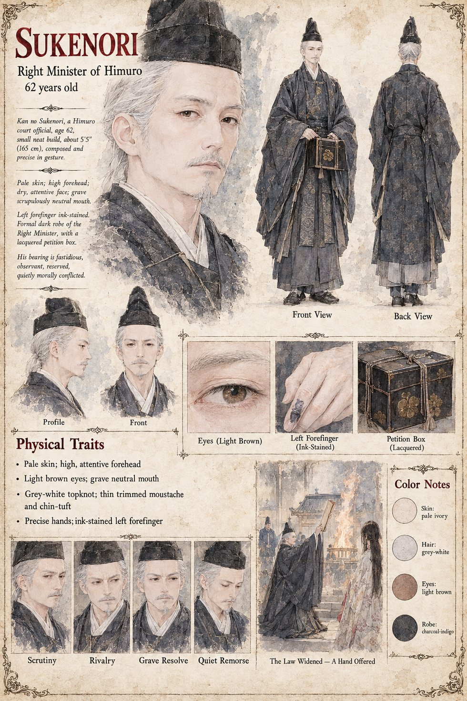

Sukenori
Kan no Sukenori · Right Minister of Himuro · about 62 years old by his sheet
A precise, fastidious man who has disliked Sugino no Arikuni for thirty years in the way one dislikes a colleague whose excellence one has been compelled to admire. He has never confided in a living person and has therefore invented a confidant: every petition the Minister of the Left has disposed of in three decades, he has read in copy and written beneath it the ruling he judged his rival would give, and he was right in all but four, which he keeps on top. On the day of the pyre he mentions the Fifth Article in the gentlest possible voice, with the air of a man inquiring whether the law applied to everyone; he does not think he is setting a trap, only asking a question to which either answer will serve. He co-seals the summons without asking to see the Examiner's report, because it was convenient not to ask. At Mikusa he sits with his hands on his knees, scrupulously neutral, tells Higaide gently that the Law does not forbid him one sentence before he touches the Stone, and declines afterward to describe the sound the Stone made. At the Reading of the Tally he answers Sadamune's missing denominator courteously and exactly: a man who has gone cannot be offered in evidence.
What he saw frightens him, and he reasons that a thing so exact should be put to work as a law rather than left to be a doom. He proposes that a Law which reaches a captain for a death at a rite should reach a granary for a loss of rice; Arikuni says Yes, and the extension is drafted within the week in Sukenori's own hand and is very well made. In the second winter of the Rising a faction of provincial counsellors summons him to Mikusa on a charge of disloyalty of the hand. He goes in the same plain palanquin, early, and thanks Jōkei by name, which in thirty years he has never done for a servant of any shrine. He leaves in his study the lacquered box of petitions with the five he misjudged laid uppermost; a nephew finds it and nobody reads it. Before the Stone he says that it is an admirable instrument and that he finds, on the whole, that it does apply. He puts out his hand. The sheet's sixty-two years, grey-white topknot, thin moustache and ink-stained finger are its own.